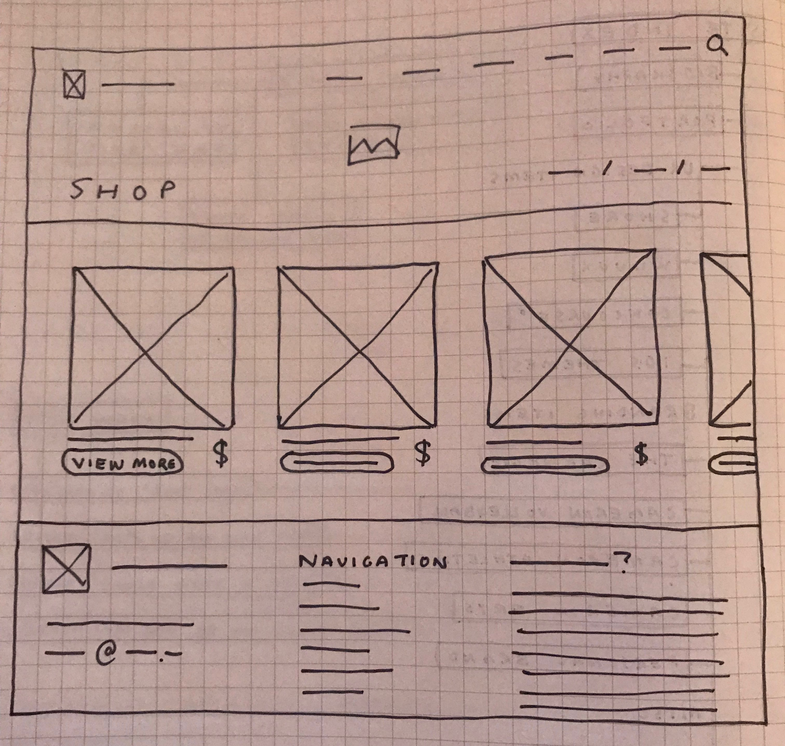
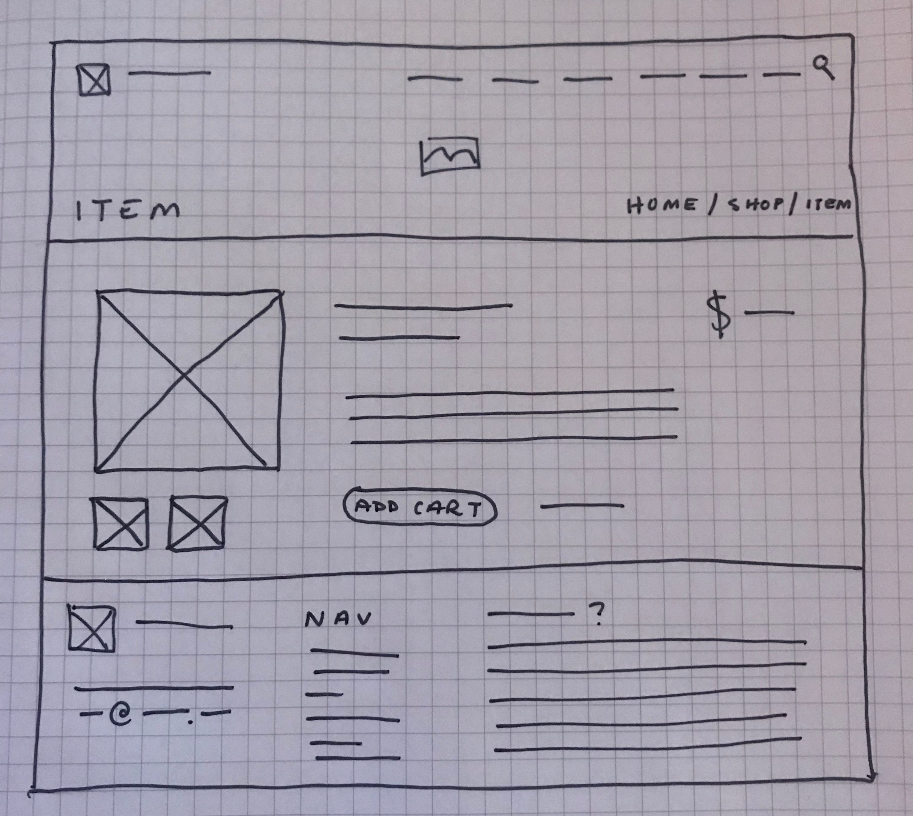

Name: Joel Schellenberger
ID: 160325650
Email: sche5650@mylaurier.ca
Title: shop.idkjoel.co
Refined Mission Statement:
To augment the content created for idkjoel.co and the UXDSA by providing a transparent, accountable, affordable option for merchandising related to design projects.
Website Structure and Organization:
Because my site is meant to be built on top of my pre-existing portfolio website, I have special considerations as far as site structure goes, because a lot of the decisions regarding structure are already pre-established.
My splash page of my site is meant to give you a quick overview of who I am, what I do, how I do it, and why I do it. Those are the key priorities I'm always focusing on on the site.
The first page of the site (idkjoel.co) is meant to give you a very surface level introduction to those four key priorities. Above the fold, you're introduced to my name, and my ethos (the who, and the why). Just beyond that, you're met with what I do and a small blurb about why I do them (the what, and the why). A little further down, you get more detailed examples of what it is I do (the what), with the option to explore my portfolio projects in more depth (finally, the how). They're at the core of everything that's on the site.
To transfer those priorities / principles from the main site to the shop subdomain, I think the focus on my ethos is important. My personal philosophy surrounding design is something I love to speak on, and honesty / transparency / accountability are things users identified as trust-building principles when online shopping, so the way I communicate information and display the sites content is incredibly important for creating an ultimately satisfying experience. Part of that philosophy (that personal philosophy that I feel lines up fairly well with the prorities users listed for developing trust) is displaying information plainly, fairly, removing as much bias or spin as possible; essentially, being as transparent as possible regarding the expreience. This is something I'll bring into every aspect of the site design; including site structure.
Upon visiting the home page of the shop, you'll be greated with the same header that dons the other pages of the site -- no advertisement, no difference between the content's display, no CTA above the fold. The home page is meant to display the products in their most basic forms, which generally means a clean, clear picture of the product, the price, and a link to view more about the item should you wish to purchase it. No immediate 'add to cart' button, no 'share' links. The types of people who will be viewing the store want to be treated with respect, and the lack of immediate 'add to cart' button is a consideration in place to remind users that they should seek more information before impulsively making a purchasing decision. This communicates to them that I, the sites creator, see the user as someone who is smart enough to think through their decision, and, when given all the information, will still choose to make the purchase. That confidence in the product I'm selling in my shop will differntiate my site from others and ultimately communicate respect to my users.
Navigation Scheme:
The goal, in my case to create an effective, efficient, usable, and satisfactory experience in the shop, revolves around users and having a minimalist, honest interface that treats the users with respect.
Utilizing simplicity and leveraging an honest ethos into trust and mutual respect is a good place to start, and I’ll work to do that by capitalizing on negative space, writing body copy in a way that doesn’t work to trick the user into purchases but instead prioritizes the idea that users need to be informed to make purchases they’re proud of.
Product mockups will be simple and easy and colours will be soft, without banner ads, intense calls to action, or even really “sale pricing,” especially in a way that entices the user to buy a product now as opposed to buying it after careful thought.
Navigating the site will be familiar to users: there will be a link to the shop in the upper header, present on every page, taking them back to the shop splash should they so wish. There may be links to other product pages at the bottom of individual product pages, however the less distraction and less mental manipulation the better. Users will be able to find anything they need without trouble — the priority is usability and efficiency, not only from a sales conversion perspective but a user engagement perspective as well.
General Layout:
Page List:
| Title | Purpose | Content | Updating |
|---|---|---|---|
| Index Page | An overview of available merchandise and allow users to quickly see important information pertaining to each product in a central location. | Quick previews of merchandise, pricing, tags(?), recency indicators, potential promotions, etc. | As new items or promotions are added, as items sell out, as the quantity of items becomes enough that sorting is required, etc. |
| Individual Product Pages | More detailed insight into a particular product, with longer descriptions and other important info, such as sizing. Also enables users to add products to their cart. | Product mockups / photos, pricing information, sizing details, long-form description, reviews(?), and add-to-cart functionality. | As sales are promoted and as inventory changes (although this can be managed automatically without manual updating). |
| Checkout Page | To allow users to follow through with the purchase of any items previously added to their cart. | Product list, pricing information, relevant additional costs (shipping or taxes come to mind), and payment acceptance. | To be updated live, with user-generated content such as their shopping cart. |
Literature:
I've gone into a fair bit of detail in each of the above sections regarding my decisions, but I'd like to elaborate a bit on some of key principles of my site that I mentioned when explaining my site's makeup. For those of you who aren't keeping score at home, those priorities were who I am, what I do, how I do it, and why I do it. Those are the key points I'm working to communicate with my online presence and should be the basis for the choices I make. Specifically, I hope to make choices that emphasize the "how" and the "why" by being purposeful in my decision making, and understanding that just because something is effective doesn't make it ethical.
Something I've prioritized that's a bit... off-base from traditional shopping sites is the removal of manipulation tactics that work to entice users into making impulsive purchases, or confuse users into purchasing items at higher costs than they anticipate. Giving this article on UXBooth a read and combining some of it's findings with my knowledge of mental manipulation, behavioural science, and the nature of enterprises to focus more on bottom line than on customer experience paints a troubling picture for the current state of affairs. These findings pushed me to make a lot of the decisions I did and prioritize satisfying, concious experience over the frankly unethical (in my opinion), but effective sales conversion tactics.
Take this point for example; the article mentions "the obliterations of small frictions" as something that can enable users to make decisions more hastily, taking away some of that time to critically consider their purchase. I am actively choosing to add a 'friction' point by not having an 'Add to Cart' button directly available from the home page of the site. A user has to view more about the item and consider their purchase before hitting the button -- this, in my opinion, is not a deterrent but rather a precaution to help them make better decisions while shopping online. The article goes on to mention "convincing [users] it's important," referring to the purchase being made, and essentially encouraging impulse buying and removing things that could lead to buyers remorse and returns, such as emailing the reciept immediately. These are deceptive, manipulative, and unethical. I hope to abstain from including tactics such as these to capitalize sales while compromising on values.
There are points mentioned in the article that I do wish to consider on the basis of usability and accountability that I think carry through the values I wish to imbue the site with. The article goes on to mention that shipping costs are a deterent for purchases; users are less likely to make a purchase when shipping is an additional fee. I plan to address this by presenting honest, all-inclusive pricing on my site that includes applicable taxes and shipping costs should the user provide me their general location when visiting the site. This accomplishes a couple goals: it removes a friction point in the final checkout (users can see the cost-by-cost breakdown on the purchase screen so that they can understand where their money is going), and communicates early and honestly to the users what the actual final total is likely to be. There's an accountability that comes with displaying pricing this way, something users are sure to appreciate.